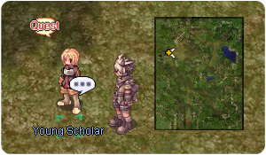

Illusion of Moonlight (Español)
Quest Principal
| Requisitos | |
|---|---|
| Nivel Base: | 100 |
| Lugar de Inicio: | payon 157/229 |
| Recompensas | |
| Experiencia: | 12,500,000 (Base) y 12,500,000 (Job) |
| Items: | 5 Illusion Stones |
- Habla con Elder Saryu (payon 157 229). Ella quiere que veas si Muyeon se encuentra bien.

- Tienes que encontrar a Young Scholar (pay_arche 49, 137) y hablar con el. Podrás encontrarlo en la entrada al dungeon de Payon, (Warper > Dungeons > Payon Dungeon > y caminar hacia afuera). Serás llevado directamente al palacio de Payon si decides acompañarlo.
 - Ve al Palacio de Payon (payon 107 323). Entra y luego ve ve hacia el warp de enfrente, una vez pasado el warp, camina hacia la habitación del lado derecho, encontrarás al grupo a punto de llevar a cabo el ritual.
- Habla con Muyeon (payon_in03 32 95) y te contará que está teniendo pesadillas.
- Habla con ella nuevamente.
- Habla con ella por tercera vez y elige Yes Cuando ella te pregunta si estás listo para ver como se purifican los amuletos.
- Examina el portal brillante y empezará otra escena.
- Entra al portal brillante para llegar al dungeon de Illusion of Moonlight.
- Habla con Scholar Chunghae a la entrada del dungeon. El te pedirá si puedes buscar mas pistas.

- Habla con el nuevamente y acepta ayudarlo. Tendrás que derrotar a Wizard of Veritas Estará en la parte inferior izquierda del mapa. Si no está vivo, deberás matar 5 Illusion Heros.
Has desbloqueado la quests diarias No Mercy for Illusions! y Remembering My Ancestors! .
- Una vez lo hayas derrotado, vuelve con Scholar Chunghae a la entrada. Como recompensa te dará 1 Illusion Stones y algo de experiencia.
Has desbloqueado la Quest diaria Stop the Wizard!. Estará en enfriamiento una vez hayas completado la quest principal. - Vuelve y habla con Muyeon dentro del Palacio de Payon, Ella te recompensará con 5 Illusion Stones y algo mas de experiencia.
Quest diarias
Stop the Wizard!
| Requisitos | |
|---|---|
| Nivel Base: | 100 |
| Lugar de Inicio: | pay_d03_i 149/45 |
| Recompensas | |
| Experiencia: | 12,500,000 (Base) y 12,500,000 (Job) |
| Items: | 1 Illusion Stone |
- Habla con Scholar Chunghae y elige Will do. Acepta su pedido.
- Mata al Wizard of Truth en la parte inferior izquierda del mapa.
- Vuelve con Scholar Chunghae y te entregara 1 Illusion Stone.
Remembering My Ancestors!
| Requisitos | |
|---|---|
| Nivel Base: | 100 |
| Lugar de Inicio: | pay_d03_i 152/45 |
| Recompensas | |
| Experiencia: | 12,500,000 (Base) and 12,500,000 (Job) |
| Items: | 2 Illusion Stones |
- Habla con Soldier Junghee y elige About the Angry Soldiers. Acepta su pedido.
- Mata 20 Angry Soldiers en el mapa.
- Vuelve con Soldier Junghee y te entregara 2 Illusion Stone.
No Mercy for Illusions!
| Requisitos | |
|---|---|
| Nivel Base: | 100 |
| Lugar de Inicio: | pay_d03_i 152/45 |
| Recompensas | |
| Experiencia: | 12,500,000 (Base) and 12,500,000 (Job) |
| Items: | 2 Illusion Stones |
- Habla con Soldier Junghee y elige About the angry Nine Tails. Acepta su pedido.
- Mata 20 Angry Nine Tails en el mapa.
- Vuelve con Soldier Junghee y te entregara 2 Illusion Stone.
Las quest Diarias se Reinician a las 00:00 hora servidor
Daily Quest Reset
Como mecánica exclusiva de NovaRO, puedes reiniciar los cooldowns de tus daily quests.
Esto significa que eres capaz de farmear cuantas Illusion Stones quieras con un único personaje, sin necesidad de crear personajes adicionales para evitar los cooldowns de las quests.
Para reiniciarlos, habla con Osmundi. Puedes encontrarlo dentro de cada Illusion Dungeon en las siguientes ubicaciones:
- Illusion of Moonlight .
- Illusion of Vampire .
- Illusion of Frozen .
- Illusion of Abyss .
- Illusion of Teddy Bear .
- Illusion of Luanda .
- Illusion of Labyrinth .
- Illusion of Underwater .
Los reinicios se separan en 3 categorías distintas acorde al grupo de dificultad en que cada dungeon se encuentra. Cada reset te recompensará con una cantidad determinada de  Illusion Stones:
Illusion Stones:
- Categoría 1: Illusion of Moonlight, Illusion of Vampire e Illusion of Frozen.
- Recompensa al resetear: 12 Illusion Stone
- Recompensa al resetear: 12
- Categoría 2: Illusion of Abyss, Illusion of Teddy Bear e Illusion of Underwater - Primer Piso.
- Recompensa al resetear: 18 Illusion Stone
- Recompensa al resetear: 18
- Categoría 3: Illusion of Luanda, Illusion of Labyrinth e Illusion of Underwater - Segundo Piso.
- Recompensa al resetear: 24 Illusion Stone
- Recompensa al resetear: 24
El primer reinicio del día, para cada grupo, te otorgará 6 Illusion Stone adicionales.
Una vez completes las dailies de cualquiera de las categorías de arriba, puedes reiniciar las daily quest de dicha categoría. Tras reiniciarlas, las quests no volverán a dar mas experiencia hasta que haya transcurrido el tiempo para su reinicio normal.
Cada categoría puede ser completada y reiniciada por separado, pero no puedes reiniciar las dailies de un Illusion Dungeon en particular sin haber completado las otras dailies de su respectiva categoría.
MVP Spawn
Para invocar al MvP Angry Moonlight, debes matar a 1000 Angry Nine Tails. Saldrá un anuncio global en el mapa en cuanto aparezca.
Mob
| Imagen | Nombre | Nivel | HP | Tamaño / Raza / Elemento |
|---|---|---|---|---|
| Cursed Munak | 110 | 17,728 | Medium / Undead / Undead 1 | |

|
Cursed Bongun | 112 | 19,077 | Medium / Undead / Undead 1 |
| Cursed Sohee | 114 | 22,414 | Medium / Demon / Water 2 | |
| Angry Soldier | 115 | 20,843 | Medium / Undead / Undead 1 | |
| Angry Nine Tail | 116 | 21,875 | Medium / Brute / Fire 3 | |

|
Illusion Hero | 117 | 24,078 | Medium / Undead / Undead 1 |
| Wizard of Veritas | 118 | 121,847 | Medium / Undead / Shadow 1 | |

|
 Angry Moonlight Angry Moonlight
|
118 | 4,300,000 | Medium / Demon / Fire 3 |
Cartas
| Carta | Va en: | Efecto |
|---|---|---|
| Arma | ATK/MATK +15
| |
| Armadura | ATK/MATK +20
| |
| Armadura | MATK +10 Si el nivel de refine es +10 o superior, MATK +2%
| |
| Arma | Al usarla en un Bow: Tienes un 3% de auto-castear
| |
| Armadura | CRIT +5
Increase critical damage by 10% If refine rate is +10 or higher, CRIT +10
| |
| Headgear | ATK +2%
Tienes un 0.5% de castear Endure sobre ti durante 5 segundos cuando se realiza daño físico melee. | |
| Arma | MATK +25
Al realizar un ataque mágico, tienes un 0.5% de que tu casteo no pueda ser interrumpido. | |
| Armadura | Permite el uso de Pressure Lv. 4
|


Equipo

Habla con Gemcutter dentro del mapa de Illusion of Moonlight. Necesitas tener equipado el item base para crear su contraparte Illusion. Mas información acerca de los encantos Illusion acá.
| Imagen | Nombre | Descripción | Creación |
|---|---|---|---|

|
Illusion Puente Robe [1] | Reduce el tiempo de casteo fijo en 3%.
Incrementa la efectividad de heal en 5%. Incrementa la efectividad de heal en 1% adicional por cada nivel de refinado. En combo con
Defensa: 52 Peso: 40 Nivel Mínimo: 99 Equipable por: Todos los Job |
|

|
 Illusion Long Mace [2] Illusion Long Mace [2]
|
Reduce el daño recibido de ataques de rango un 10%.
Por cada 2 niveles de refine, reduce el daño recibido de ataques de rango en un 3% adicional.
Ataque: 185 Peso: 40 Nivel del Arma: 4 Nivel Mínimo: 99 Equipable por: Acolyte Class |
|

|
Int + 1
Int + 1 e incremento de la efectividad de heal en 3% adicional por cada 2 niveles de refinado. En combo con Illusion Puente Robe [1]:
Defensa: 4 Location: Upper Peso: 10 Nivel Mínimo: 99 Equipable por: Acolyte Class |
+7 Nurse Cap | |

|
 Illusion Apple of Archer [1] Illusion Apple of Archer [1]
|
DEX +3
DEX +1 adicional por cada 2 niveles de refine.
Defensa: 1 Location: Upper Peso: 20 Nivel Mínimo: 99 Equipable por: Todos los Job excepto Novice |
|

|
 Illusion Muffler [1] Illusion Muffler [1]
|
Max HP +100, Max SP +10.
Max HP +100 y Max SP +5 adicional por cada nivel de refine.
Defensa: 8 Peso: 40 Nivel Mínimo: 99 Equipable por: Todos los Job excepto Novice |
100 Hazy Mooncakes |

|
 Illusion Shoes [1] Illusion Shoes [1]
|
Max HP +100, Max SP +10.
Max HP +100 y Max SP +5 adicional por cada nivel de refine.
Defensa: 10 Peso: 40 Nivel Mínimo: 99 Equipable por: Todos los Job excepto Novice |
100 Hazy Mooncakes |
 Illusion Spectral Spear [1] Illusion Spectral Spear [1]
|
Incrementa el daño físico contra monstruos de propiedad Shadow y monstruos de Raza Demon y Undead un 20%.
Reduce el daño recibido de monstruos de propiedad Shadow y monstruos Raza Demon y Undead un 10%. Incrementa el daño físico y reduce el daño recibido en un 3% adicional por cada 2 niveles de refine. Recupera 50 HP cuando matas enemigos con daño físico melee. Por cada 2 niveles de refine, Recupera 1 SP adicional cuando matas enemigos con daño físico melee. Hay una probabilidad de que el usuario sea afectado por el estado de confusión. En combo con {Item List|id=22133|item=Illusion Shoes|slots=1}}: ASPD + 8%. Si Si la suma de ambos niveles de refine es igual o mayor a +18, incrementa el daño físico de rango un 10%. Si la suma de ambos niveles de refine es igual o mayor a +22, incrementa el daño de
Ataque: 240 Peso: 200 Nivel del Arma: 4 Nivel Mínimo: 99 Equipable por: Swordsman Class |
||

|
Illusion Staff of Bordeaux [2] | MATK +180, INT +3, DEX +2.
Cuando Por cada 3 niveles de refine, disminuye el consume de SP de las habilidades en 5% y aumenta el MATK en un 1% adicional. En combo con Incrementa el daño de Si Illusion Staff of Bordeaux [2] e Si la suma de ambos niveles de refine es igual o mayor a +18, incrementa el daño mágico de elemento Neutral y Earth. un 10%. Si la suma de ambos niveles de refine es igual o mayor a +22, incrementa el daño mágico de propiedad Water un 10%.
Ataque: 60 Peso: 50 Nivel de Arma: 4 Nivel Mínimo: 99 Equipable por: High Mage Class |
|

|
 Illusion Moonlight Dagger [1] Illusion Moonlight Dagger [1]
|
Max SP + 10%.
Recupera 3 SP por cada golpe físico melee. Si el nivel de refine es igual o mayor a +10, recupera 4 SP adicional por golpe.
Ataque: 150 Peso: 70 Nivel de Arma: 4 nivel Mínimo: 99 Equipable por: Swordsman Class, Mage Class, Archer Class, Merchant Class, Thief Class, Soul Linker, Ninja |
 +7
+7  +7
+7  100
100  +7
+7  100
100  +7
+7  +7
+7 
 +7
+7 


 +7
+7